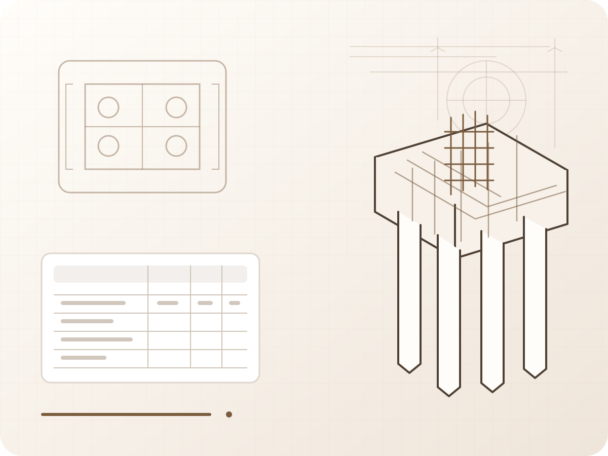

Civil / Structural Engineer
Hi, I’m Ning.
I am a civil engineer who thinks in systems, structures, and decisions. My work connects engineering logic, cost control, digital tools, and clear communication.

About Me
I approach engineering as optimization: delivering reliable performance while reducing waste, cost, and unnecessary complexity. I am interested in structural design, BIM, data centers, AI-assisted workflows, and engineering communication.
Core Thinking
- Logic before tools
- Structure before details
- Cost, risk, and constructability
- Adaptability with engineering judgment
Engineering Focus
- Structural Engineering
- Cost Control
- QA/QC
- BIM & Digital Engineering
Philosophy
Software changes. Logic remains. Adaptability compounds. Judgment creates value.